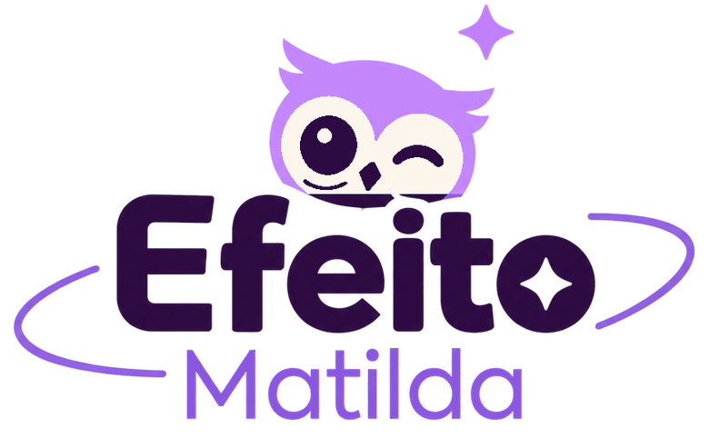

Desafios práticos primeiro
Antes de escolher uma área, você experimenta: desafios de mão na massa, na prática.

EntrarDa curiosidade à participação científica
Não é curso, chatbot ou rede social. É onde meninas do ensino básico experimentam ciência e tecnologia na prática, com uma mentora de IA que pergunta antes de responder.
Antes de escolher uma área, você experimenta: desafios de mão na massa, na prática.
Ela pergunta, não entrega resposta pronta. Te ajuda a pensar, não pensa por você.
Referências reais de cientistas, engenheiras e programadoras, para você descobrir quem já abriu esse caminho.
Olimpíadas, feiras de ciência e hackathons abertos para a sua idade. Participe de verdade, não só leia sobre eles.
Não queremos apenas mostrar às meninas que a ciência existe. Queremos criar caminhos para que elas entrem nela.